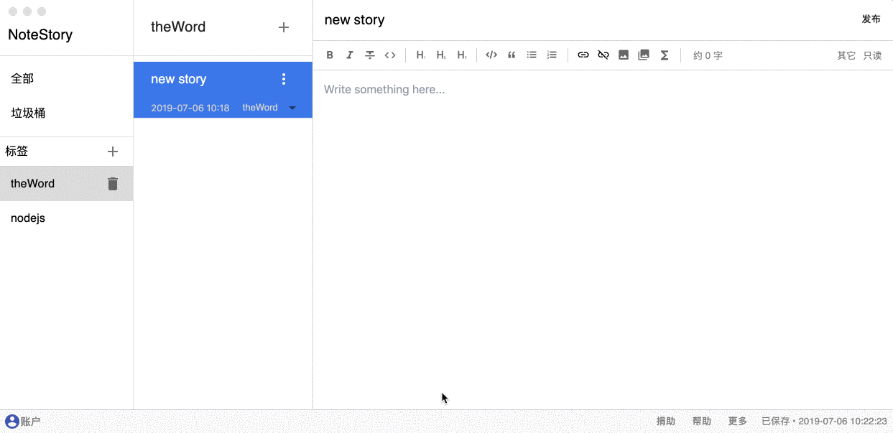
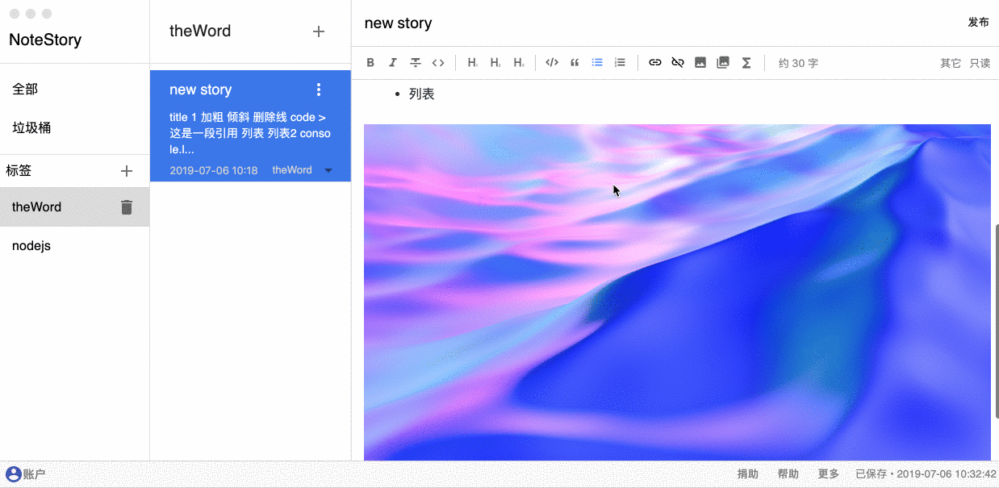
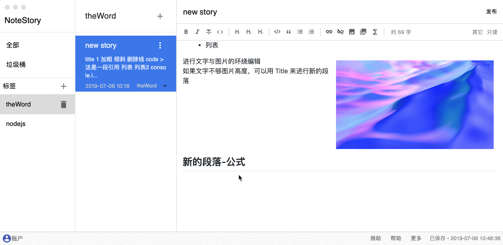
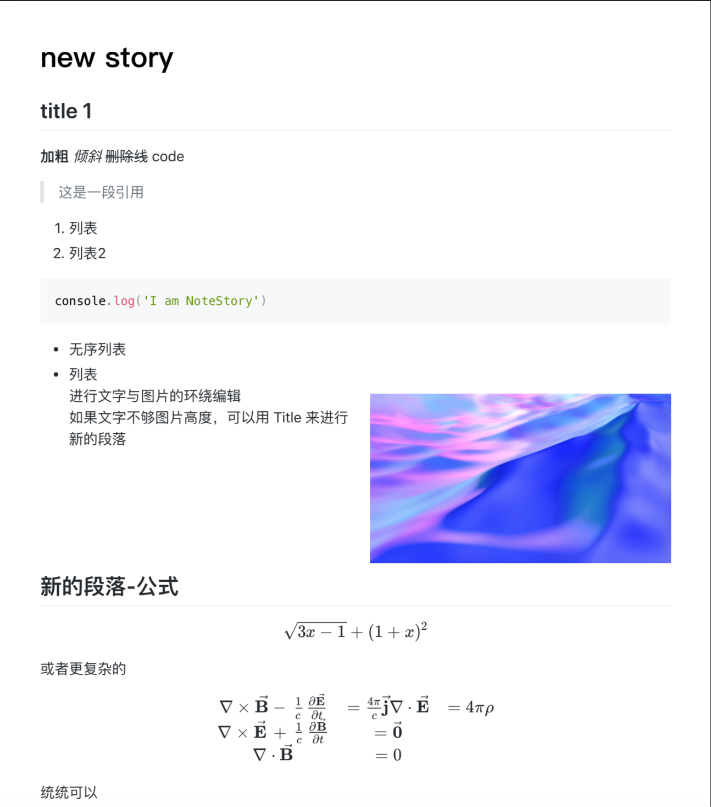

NoteStory 是一款文字记录软件，支持富文本，支持图片左右环绕，支持代码的高亮，支持 TeX 公式。
NoteStory 可以将文本进行 MD，PDF 导出。方便成果的再编辑和打印
你可以使用 markdown 语法，快捷、方便、流畅的敲打文字。

进行文字和图片的左右排版

录入数学公式

导出
在工具栏的 其它 按钮下，有导出到 MD，PDF 选项，可以方便的将你的成果导出，再编辑或者打印
数据备份
登录账户后可进行数据的备份和恢复